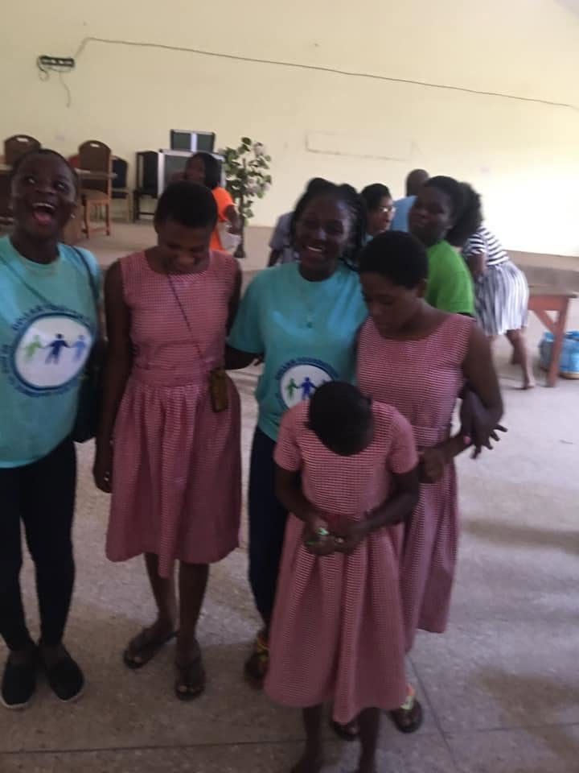
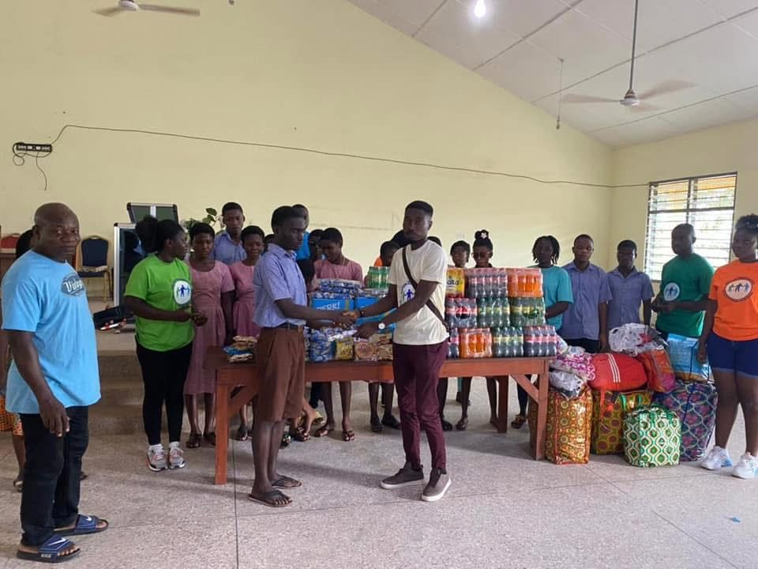
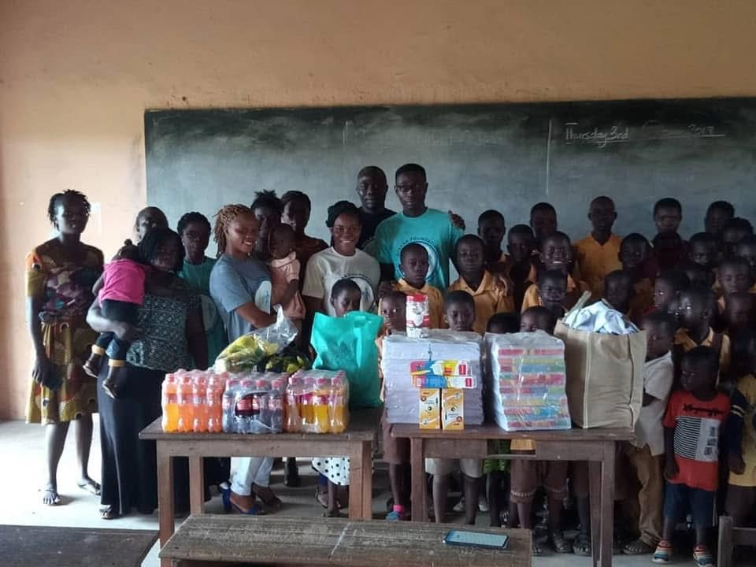
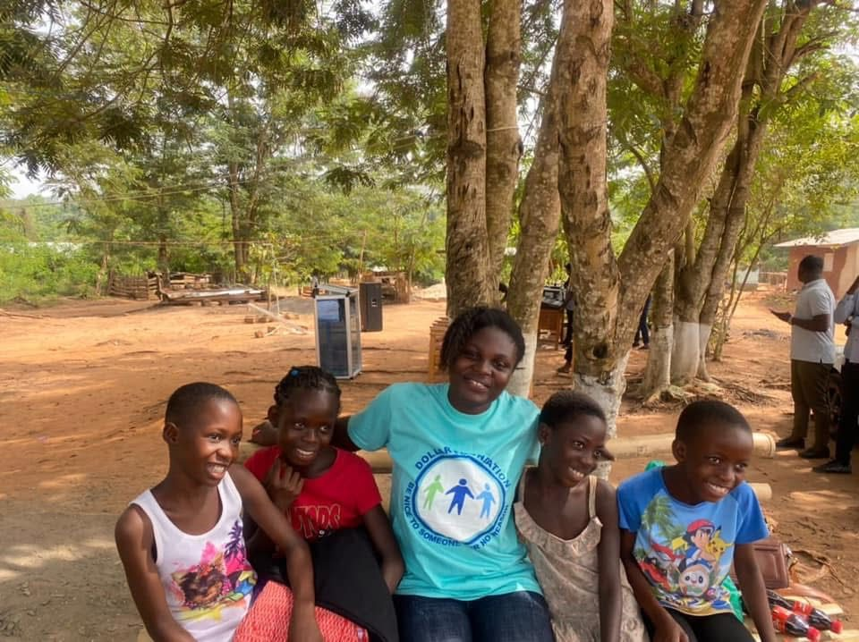
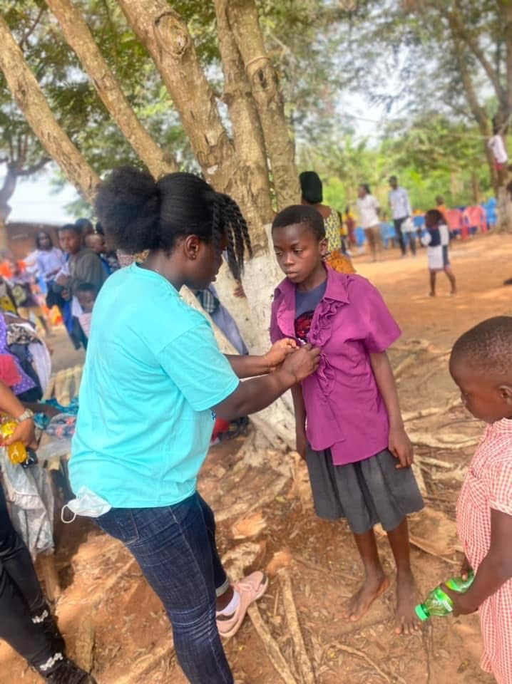
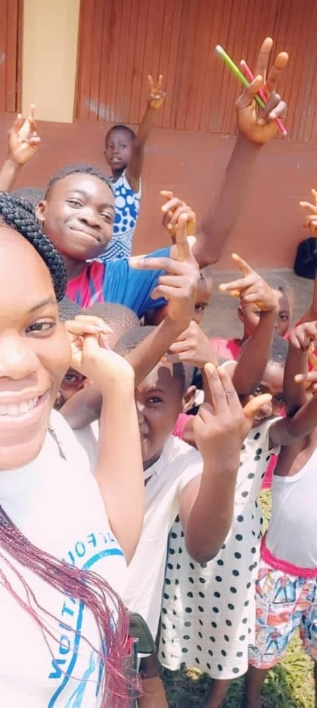
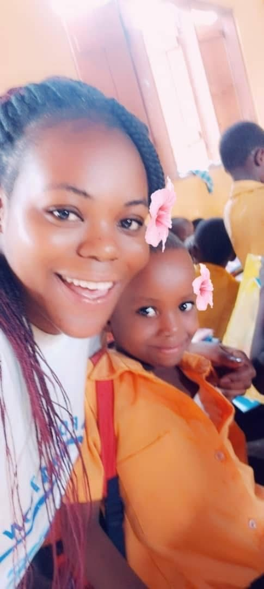
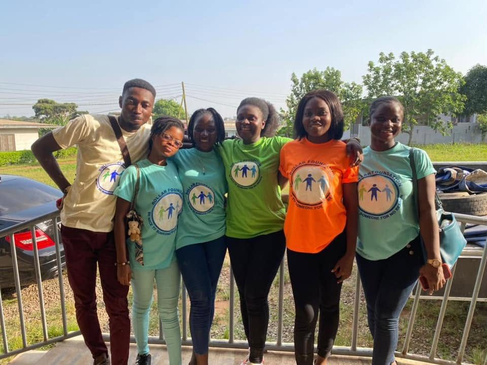
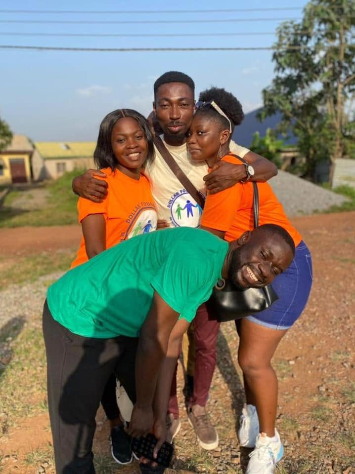
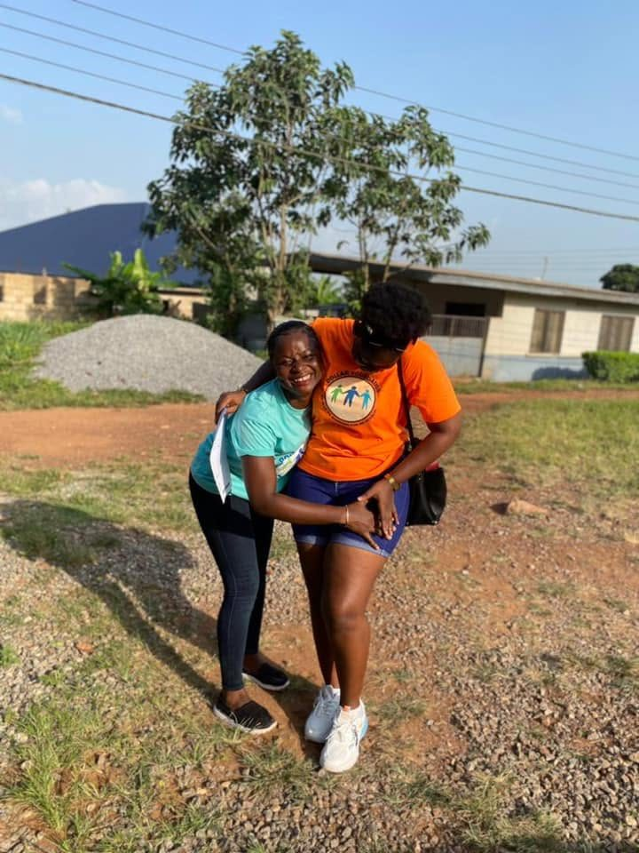

Gallery
Our volunteers out in the community. For the latest photos and videos, follow us on Facebook.
Outreach — December 2022
Volunteers spent the day with students, sharing drinks, biscuits and other provisions.




In schools and communities
School supplies, provisions and time spent together with children.






Our volunteers
The people in the green, blue, orange and yellow T-shirts who make it all happen.





